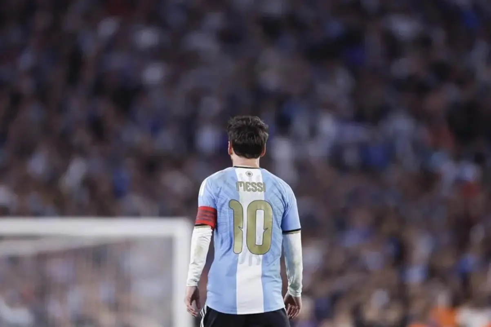

Datos personales
- Nombre completo: Lionel Andrés Messi Cuccittini
- Nacimiento: 24 de junio de 1987, Rosario, Argentina
- Posición: Delantero
- Equipos: FC Barcelona, PSG, Inter Miami
Biografía
Messi comenzó jugando en Newell's Old Boys y a los 13 años se mudó a Barcelona, donde debutó en el primer equipo y se convirtió en el máximo goleador de la historia del club. Es considerado uno de los mejores futbolistas de todos los tiempos.
Logros destacados
- Campeón del Mundo con Argentina (Qatar 2022)
- Copa América 2021 y 2024
- 8 Balones de Oro
- 4 Champions League con el Barcelona
Galería
